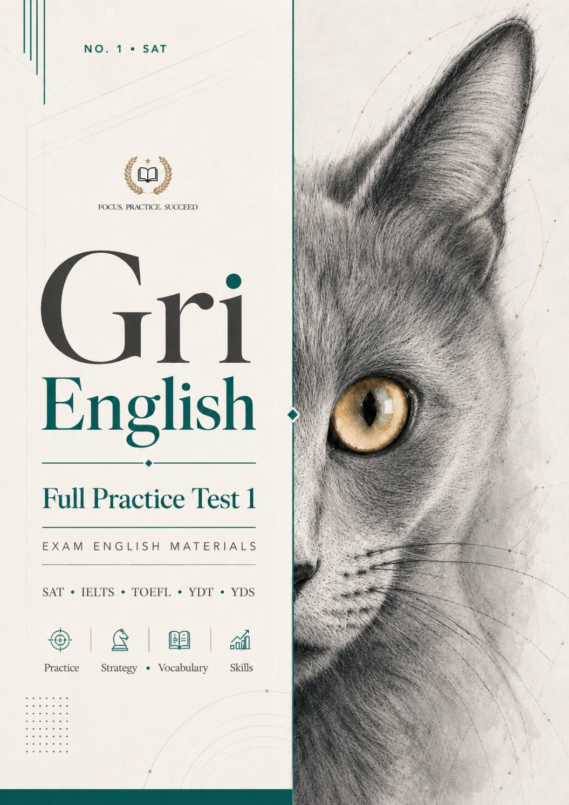

Digital SAT formatında tam uzunlukta bir deneme. İki section, dört modül, 147 soru. Modül 1'deki performansın Modül 2'nin zorluğunu belirler. Süreler, soru sayıları ve mola gerçek SAT ile birebir aynıdır. Her soruda detaylı Türkçe çözüm, kelime notu ve hata analizi vardır.
Ödeme onaylandıktan sonra hesabına erişim açılır. Denemeye tarayıcıdan girilir, indirme gerekmez.
Toplam 147 soru, gerçek SAT formatında dağılım. Her modül kendi süresinde çözülür, modüller arası geçişte adaptif yönlendirme devreye girer.
Tüm soru tiplerinden karma 27 soru. Words in Context, Central Ideas, Inferences, Command of Evidence, Boundaries, Form & Structure, Transitions, Cross-Text Connections.
27 soru · 32 dakikaModül 1 performansına göre Easy ya da Hard yola yönlenirsin. İki yolda da aynı soru tipleri, farklı zorluk seviyesinde.
27 soru · 32 dakikaAlgebra, Advanced Math, Problem Solving and Data Analysis, Geometry & Trigonometry domain'lerinden karma 22 soru.
22 soru · 35 dakikaMath Modül 1 performansına göre Easy ya da Hard yola yönlenirsin. Aynı domain dağılımı, farklı zorluk seviyesinde.
22 soru · 35 dakika32 dakikada 27 soru. Tüm soru tipleri karma. Cevaplama sonunda performans hesaplanır.
Modül 1 skoruna göre Easy ya da Hard yola yönlendirilirsin. Gerçek SAT'taki gibi.
R&W ve Math arasında 10 dakikalık mola süresi. Gerçek SAT formatıyla aynı.
Math Modül 1, ardından adaptif Math Modül 2. Toplamda 70 dakika Math.
Bölüm bazlı skor, soru tipi bazlı doğru/yanlış oranı, her sorunun çözüm açıklaması.
Yanlışların ve yer imlerin Çalışma Masam'da listelenir. İstediğin zaman geri dönüp tek tek çalışabilirsin.